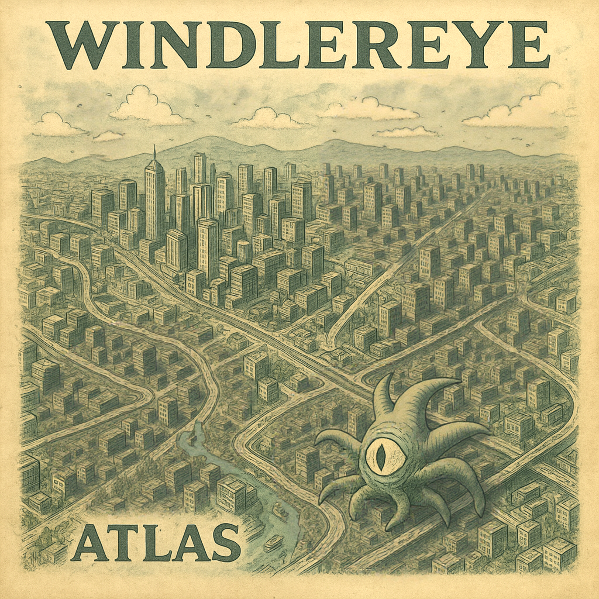

[Verse 1]
I told her I'd stay till the night was done
I meant it halfway, then I was gone
She stood with the light still on
And I watched from the street, awaiting for the dawn
[Verse 2]
There's a word I never said out loud
It grew like a sore in my mouth
I thought truth was something clean
It turned out dirty, it turned out mean
[Chorus]
A stupid idea
To think I could fix what I broke
A stupid idea
To play calm while the fire choked
It wasn't courage
It was just fear in a coat
[Verse 3]
I packed my things in a rush, no fold
Left the note, not brave, just cold
I told myself it was for her peace
But I just didn't want to see her cease
[Bridge]
All the small things I hid behind
Sounded noble at the time
Now I talk to myself in line
With the reasons I can't justify
[Chorus]
A stupid idea
To think I could fix what I broke
A stupid idea
To play calm while the fire choked
It wasn't courage
It was just fear in a coat
[Outro]
She said "go then," I did.
That's all that it is.
And every quiet night since
Feels like proof that I missed.
[Intro]
Hey kids, they say you gotta be yourself
So I sold mine online and got great shelf life
Reviews were mixed
("a little bland but tries hard")
Five stars from my mom though, bless her heart
[Verse 1]
Tried to grow a beard of purpose, failed the vibe test
Said "authenticity," then forgot the rest
Put glitter on my flaws, they charged me tax
And I smiled through the lag of human acts
[Chorus]
Be yourself! (yeah!)
Even if it's someone else
Buy the shirt, rehearse the yell
Be yourself!
Get the app that helps you tell
Who you are this week — oh well!
[Verse 2]
Meditation ad said "find your core"
I dug six feet and hit the floor
God bless the algorithm's hand
For showing me I'm real on demand
[Bridge]
I took a quiz — it said "you're fine"
I took it twice, now I'm divine
My left hand clapped, my phone approved
("be yourself!" the crowd all booed)
[Chorus]
Be yourself! (ha-ha!)
Even if it's someone else
Post your truth, disguise it well
Be yourself!
And if you trip, just say you fell
Into personal growth — oh hell!
[Verse 3]
I met myself behind a mall
He looked tired, not much at all
We swapped IDs, he said "don't tell"
Then vanished into a self-help shell
[Chorus]
Be yourself!
Paint your soul with borrowed gel
Be yourself!
Sell your flaws on carousel
Be yourself!
Till you're empty but it sells —
Be yourself...
Be yourself...
[Outro]
You're doing great.
Everyone's unique.
That's why we all look the same.
[Intro]
Take a look outside!
It's all poetry in motion, right?
Birds in the trees, breeze on your knees
Don't sneeze, just believe
It's a beautiful sight!
[Verse 1]
See the child in the sandbox build his dream,
Then sneeze his fortress into steam.
A seagull steals a french fry crown,
A marching band gets lost downtown.
The mayor waves, his wig's a clown's.
[Chorus]
See the world around you!
Every marvel's half insane!
See the world around you!
There's fun in every pain!
Look closer, don't look too near
The punchline's whispering in your ear!
[Verse 2]
A dog runs loose with someone's hat,
A jogger trips on a screaming cat.
That old man steps on dog poop,
A lizard laid an egg in a coop.
Then attacked the chickens!
[Chorus]
See the world around you!
All the saints have slipped on jam!
See the world around you!
Perfection's just a traffic jam!
Keep your eyes open wide
There's chaos on every side!
[Bridge]
And now - oh now!
THAT LOVING COUPLE RUN OVER BY A BUS
DRIVEN BY AN ANTHROPOMORPHIC RACCOON
WITH RABIES, MAKING A FUSS!
Meanwhile, three pigeons pee towards the sun
Cause emotional distress
The court adjourns for lunch!
[Verse 3]
The old man's stepping strong in prayer,
A second dog poop out of nowhere.
Poop marathon forty-two kilometers long,
Spectators cheer at the scented grudge,
No step without brown fudge,
The priest bets five bucks, executioner judge.
Mayor Wigless gives him a nudge.
[Chorus]
See the world around you!
It's a circus dressed in rain!
See the world around you!
Laugh before it laughs again!
Step right up, take your cue
The mirror's pointing straight at you!
[Outro]
(see it... see it...)
The pigeons cry "potato!"
The raccoon revs once more.
Dog poop slush on the slushy cup
Oh what a marvelous war!
See the world around you...
And try not to step in it.
[Intro]
There were two outlines on the desk.
"Pick one, your hours are limited."
So I reached for the red pen
And signed the contract
[Verse 1]
After that, my brain rewired its lines.
Circuits crossed in quiet signs.
You laughed - a sudden bend.
Patterns shifted, walls would twist again.
The air grew thin where thought should stay.
I didn't notice the switch until halfway.
[Chorus]
We chose a branch and let the rest decay.
Good things bloomed, and good things frayed.
This is the shape that choice has made
I can't rollback the trade.
The unbuilt worlds just slide...
Entropy feeds on what I didn't decide.
[Verse 2]
You said the noise would fade with time.
Instead it turned to metric rhyme.
Moments looped - revisions spun.
Maybe each breath spawns a line unseen,
A map of outcomes, clean or mean.
Butterflies beat through the open wide.
[Chorus]
We chose a branch and let the rest decay.
Good things bloomed, and good things frayed.
This is the shape that choice has made
I can't rollback the trade.
The unbuilt worlds just slide...
Entropy feeds on what I didn't decide.
[Bridge]
What if I had paused, or just looked aside...?
[Chorus]
We chose a branch and let the rest decay.
Good things bloomed, and good things frayed.
This is the shape that choice has made
I can't rollback the trade.
The unbuilt worlds just slide...
Entropy feeds on what I didn't decide.
[Outro]
Thus the contract held.
Thus the rest dissolved.
Thus the day
Was signed.
[Verse 1]
The clock says noon but the frame says none,
I've been talking to walls just to get things done.
The coffee's cold, I drink it still,
I keep my word against my will.
[Pre-Chorus]
You said one day we'd both return,
To who we were before the burn.
[Chorus]
I'll stand up even if it hurts.
I'll keep the promise, not the words.
You walk away, I'll stay alert.
I'll live through this - even if it hurts.
Even if it hurts
[Verse 2]
My hands don't shake, they just refuse,
To hold what's gone, to pick and choose.
The mirror's flat, it shows what's true,
I lost the part that still knew you.
[Pre-Chorus]
You said one day the ache would fade,
But daylight cuts the same old way.
[Chorus]
I'll stand up even if it hurts.
I'll keep the promise, not the words.
You walk away, I'll stay alert.
I'll live through this - even if it hurts.
[Bridge]
There's no fire, no grand design,
Just the sound of breath on borrowed time.
I trace the edge of what I've learned,
You don't get peace - YOU EARN THE BURN!
[Chorus]
(I'll stand up even if it hurts.
I'll keep the promise, not the words.
You walk away, I'll stay alert.)
I'll live through this...
[Chorus]
I'll stand up even if it hurts.
I'll keep the promise, not the words.
You walk away, I'll stay alert.
I'll live through this - even if it hurts.
[Outro]
The clock says noon but the day won't turn,
I stay alive - even if it... hurts.
[Verse 1]
Ten tries made a dent in the wall
Hundred more, just don't count at all
The floor knows every fall I've had
The breath comes rough, then clean, then flat
[Pre-Chorus]
It doesn't hurt the same each time
The body just learns the line
[Chorus]
Do it once, do it endlessly
Till it cuts through thought and memory
Hands move first, they don't ask me
I've learned to fail
Effortlessly
[Verse 2]
Thousand nights I stayed awake
Just to make the same small mistake
Now I do it right, no ache
No pride, no rage, no give, no take
[Pre-Chorus]
It doesn't shine, it doesn't fade
It's just a move the bones made
[Chorus]
Do it once, do it endlessly
Till it cuts through thought and memory
Hands move first, they don't ask me
I've learned to fail
Effortlessly
[Bridge]
One million turns
The motion learns
The mind steps back
The body burns
[Chorus]
Do it once, do it endlessly
Till it cuts through thought and memory
Hands move first, they don't ask me
I've learned to live...
[Outro]
Effortlessly
[Verse 1]
We meet at corners, you and I
A ninety-degree agreement line
You talk in slopes, I talk in planes
We solve for love but lose the frame
[Pre-Chorus]
Every angle hides a deal
Every side decides what's real...
[Chorus]
We draw our hearts in symmetry
Call it faith or chemistry
But every circle's closing in
And someone's stuck in ecstasy
We measure worth by what we see
We live inside geometry
[Verse 2]
Triangles of care and doubt
Points connect, then they branch out
You stand between what's fair and mine
I stretch the edge to cross the line
[Pre-Chorus]
Every graph has space to fall
Every shape forgets it's small
[Chorus]
We draw our hearts in symmetry
Call it faith or chemistry
But every circle's closing in
And someone's stuck in ecstasy
We measure worth by what we see
We live inside geometry
[Bridge]
Squares of trust, they crack in rain
Stars of teamwork fade again
A single dot becomes a wall
When no one speaks, no one calls
[Chorus]
We draw our hearts in symmetry
Call it faith or chemistry
But every circle's closing in
And someone's stuck in ecstasy
We measure worth by what we see
We live inside geometry
[Outro]
Lines extend, then bend away
We meet again where shapes decay.
[Verse 1]
I watched the crowd decide who's wrong,
Their mouths all bend, the air turns strong.
A quiet seed behind my ribs,
Grew spikes in glass - and I let it live.
They call it truth, I call it ache.
Vertebrae crack, and something breaks.
[Chorus]
Hatred, it feeds the fire
You curse the ashes beyond the spire
Hatred, it wears your name.
You hold it tight till it does the same.
Hands on your chest, it beats in disguise
Hatred is the friend that never dies.
[Verse 2]
A face like mine but from a different lane,
He said my words with a stranger's frame.
I gave a sound, he gave back fear,
And every echo pulled me near.
My skin felt wrong in my own skin,
The flame I spat burned from within.
[Bridge]
We built a wall, then stood inside it.
We drew the line, then couldn't find it.
Hatred taught me how to aim,
And then it whispered: "We're the same."
Now every wound I gave came home,
And found a bed beneath my bones.
The echo fades but leaves its scar,
I sleep beside the thing we are.
[Chorus]
Hatred, it feeds the fire
You curse the ashes beyond the spire
Hatred, it wears your name.
You hold it tight till it does the same.
Hands on your chest, it beats in disguise
Hatred is the friend that never dies.
[Chorus]
Hatred, it keeps the fires fed.
You curse the ash, but breathe it instead.
Hatred, it wears your name.
You hold it tight till it does the same.
Hands on your chest, it beats in disguise —
Hatred, the friend that never dies.
[Verse 1]
Been pacing like a saint on trial
Said to myself, "don't smile yet"
The walls all lean to hear awhile
I cough once, rehearse regret
Feels like I'm holding a secret in debt
[Chorus]
I have something...
I have something...
[Verse 2]
It's growing right behind my sight
It burns through every decent ache
It feels alive, it zaps, it fights
Zip zop zap - it breaks
If I don't let it out, I'm gonna shake
[Chorus]
I have something...
I have something...
I have something...
It's a small thing, it makes me cry
I have something...
I have something...
I have something in my eye!
[Chorus]
I have something...
I have something...
It's a small thing, it makes me cry
I have something...
I have something...
I have something in my eye!
[Outro]
It may have been a chicken bone
Could have been a bug
Where is my phone?
Blinking hard 'til it's monochrome
Doctor said "Sir, that's your finger"
I said "No, I'm pointing at my eye"
"I swear it winked when I was alone"
Either way, the eye is gone, full-blown